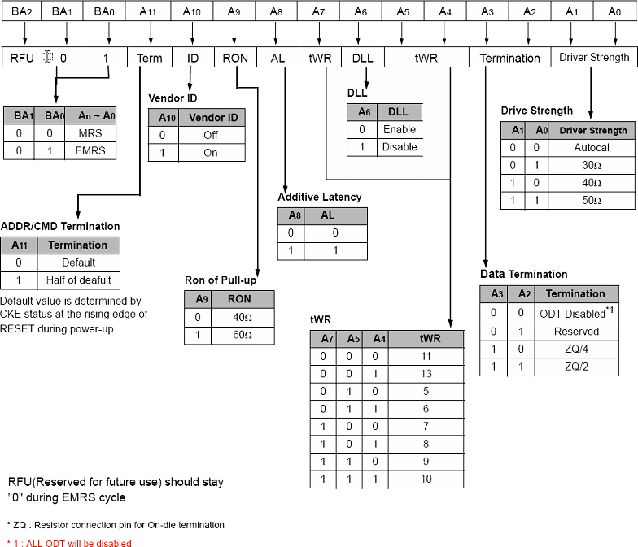

Extended Mode Register Set (EMRS)
The extended mode register stores the data output driver strength and on-die termination options. The extended mode register is written by asserting low on CS, RAS, CAS, WE and high on BA0 (The GDDR3 SDRAM should be in all bank precharge with CKE already high prior to writing into the extended mode register). Refer to the figure below for specific codes.
